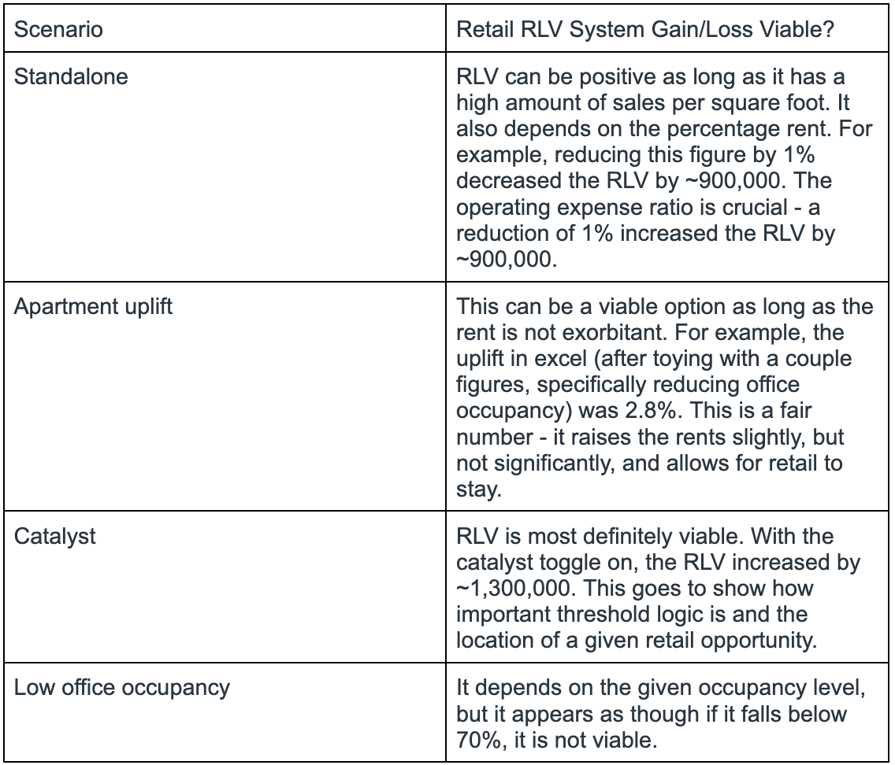
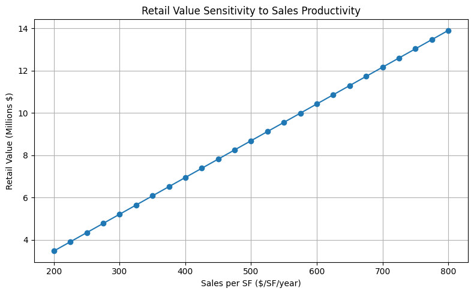

Retail businesses need a driver, such as a minimum consumer base required to generate enough sales. If no one is interested in the goods the business provides, then it will not succeed. This contrasts housing economics, which is a necessity for livelihood, and office economics, which is a necessity for corporations. These two forms can survive on their own, but retail businesses tend to need an extra push.

Required Apartment Rent Uplift: [0.028]
Is the uplift realistic?
it may not be very realistic. It would allow retail to stay, but it depends on the
apartment complex itself. If it’s a high-end, luxurious apartment building, it could
be a bigger issue. Or, it may allow the proprietor to charge even higher rents to give
the retail some leeway.
Is public subsidy justified?
In this case, public subsidy may be justified, but it is not required.
Technically, there is already a catalyst in place, making public
subsidy unnecessary.

If I were allocating public funds, I would support retail development as long as it is projected to help the area overall. This can be through economic benefits - if it opens up the opportunity for people to explore more of the area (i.e. give people a reason to explore a specific neighborhood), this can boost foot traffic and the amount of money circulating the businesses that make up that area. It can also be through social benefits, such as by increasing walkability and creating more active streets. It can also serve to benefit underserved populations, like putting a grocery store in a food desert. I would also push for the introduction of new businesses, whether it’s a new start-up shop or a chain that’s not very popular in the general area, rather than a Starbucks that already has stores only blocks away.